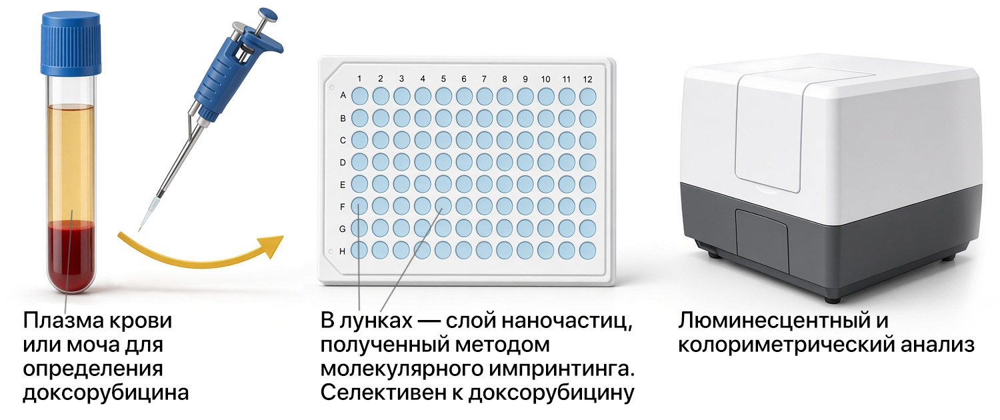
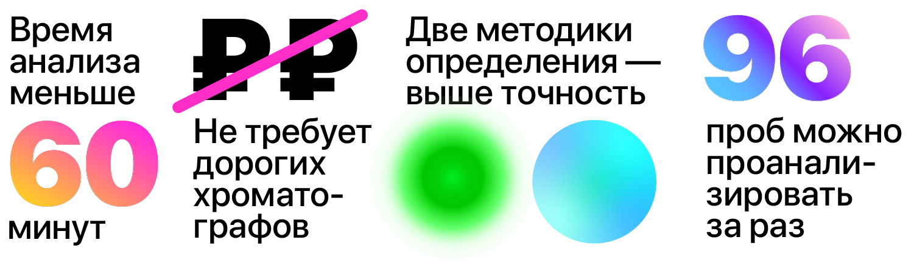
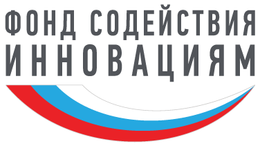
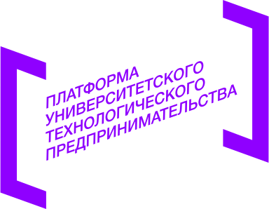

О продукте
МимиДокс — доступная тест-система для мониторинга доксорубицина у пациентов, проходящих курс химиотерапии
В основе тест-системы — наночастицы, полученные технологией твердофазного молекулярного импринтинга и обладающие специфическим сродством к доксорубицину. Они формируют распознающий слой на внутренней поверхности лунок микропланшета.
Лечащий врач корректирует дозу под индивидуальную фармакокинетику пациента, удерживая концентрацию препарата в узком терапевтическом окне — между малоэффективной и токсической. Анализ выполняется в двух форматах:
Доксорубицин обладает собственной флуоресценцией — измеряется интенсивность свечения на стандартном планшетном ридере
Измеряется оптическая плотность по собственной окраске препарата

Материал отличается высокой стабильностью и не требует специальных условий хранения, а уникальность продукта — первое отечественное решение для рутинного мониторинга доксорубицина, доступное любой клинико-диагностической лаборатории.

Потенциальные заказчики
Разработка актуальна для онкологических диспансеров и центров, проводящих курсы химиотерапии с доксорубицином, лабораторий клинической фармакологии, а также для контрольно-аналитических лабораторий Росздравнадзора и фармацевтических производителей — для контроля качества препаратов доксорубицина.
Контакты
| Организация |
ООО «МиМиДокс» |
| Руководитель |
Коганова Дарья Геннадьевна |
| Электропочта | |
| Телефон |

